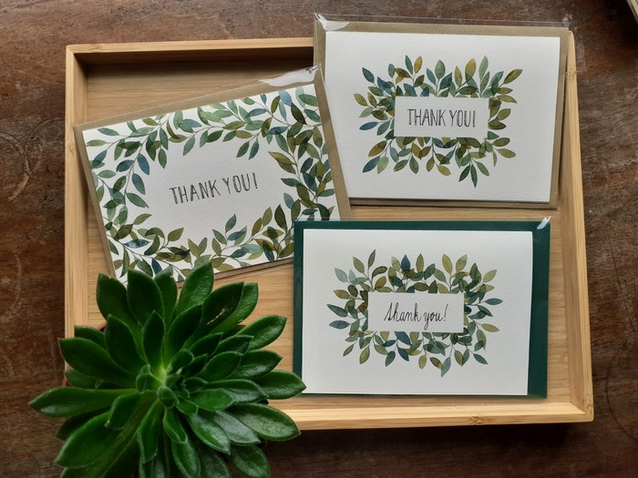
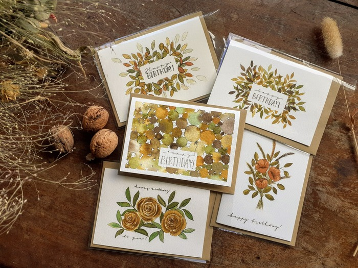
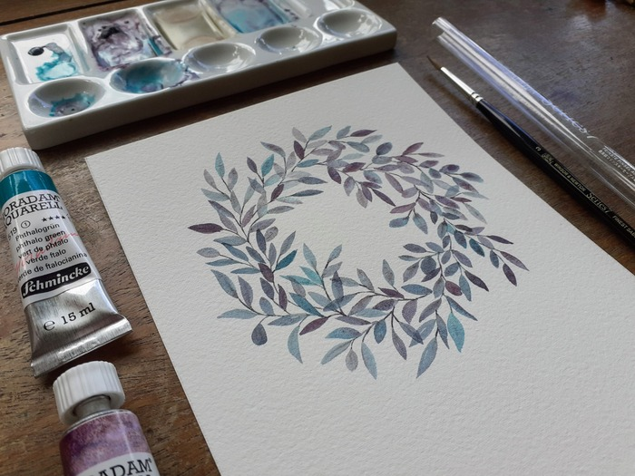

Portfolio

Leaves on cards

Autumn B-day cards

Botanical cards

Painted not Printed
Meet the person behind the brand Painted not Printed - Eva.
Eva is an artist, wife, women, psychologist and a friend, currently based in East Sussex, UK.
She has been painting watercolour florals for 4 years now.
It was in the summer 2021 when the exciting journey of her brand Painted not Printed has started.
Eva hopes that you will find her art full of peace, joy and life as it is created to encourage and help!
She is offering original wall art, all kind of bespoke cards (thank you cards, b-day cards...).
Each artwork is hand-painted on 100% cotton watercolour paper (300gsm) using artist quality watercolour paints with excellent lightfastness.
Envelopes for the cards are made of recycled paper and foil from vegetable starch (so the packaging is fully compostable).
Painted not printed is supporting charities with 10 % of the profit.
Eva is also open to commissions - feel free to choose colour palette or theme and your own text and you can have your own artwork (card, wall art...) suiting your needs.